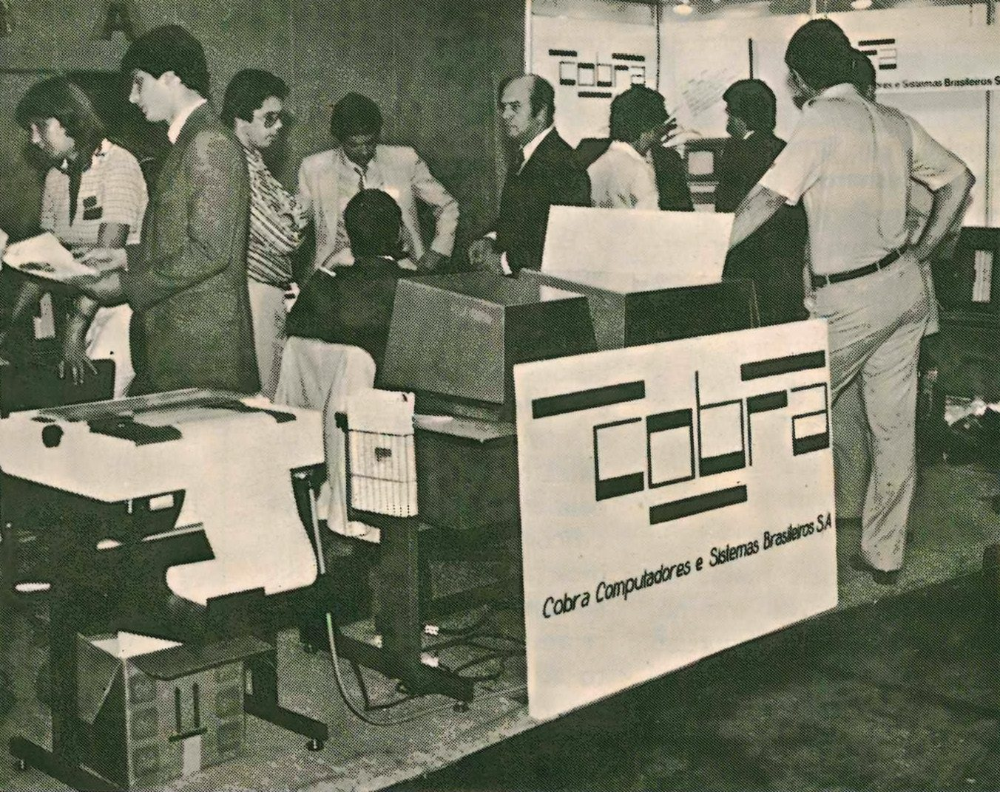

Após o sucesso acadêmico do "Patinho Feio", o Brasil provou que tinha capacidade técnica para criar computadores. No entanto, o país ainda dependia quase totalmente de máquinas importadas, que eram caras e controladas por empresas estrangeiras. Para mudar esse cenário, o governo tomou uma decisão estratégica.
Em 1974, foi fundada a COBRA (Computadores e Sistemas Brasileiros S.A.). Ela nasceu como a primeira empresa estatal de informática do país, criada para ser a ponte entre a pesquisa universitária e a indústria. O objetivo era transformar o conhecimento técnico em produtos comerciais reais e construir uma soberania tecnológica.
Principais Objetivos da COBRA:
- Absorver e nacionalizar a tecnologia de computadores;
- Reduzir a dependência de equipamentos e softwares importados;
- Atender à demanda de setores estratégicos (bancos, governo, universidades);
- Formar mão de obra técnica especializada no Brasil;
- Ser a base para a futura Política Nacional de Informática.